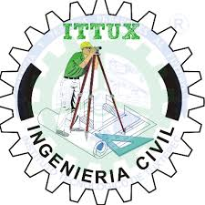

Ingenería en Sistemas Computacionales
"¡Despierta tu ingenio! En Ingeniería en Sistemas, transformamos ideas en realidades. Únete a nosotros y sé el arquitecto del futuro digital."

Ingenieria Civil
"¡Haz realidad tus sueños! En Ingeniería Civil, diseñamos y construimos el mundo que nos rodea. Únete a nosotros y deja tu huella en cada estructura."
Ingeneria informartica
"¡Conéctate con el futuro! En Informática, transformamos datos en decisiones. Únete a nosotros y sé parte de la revolución digital."